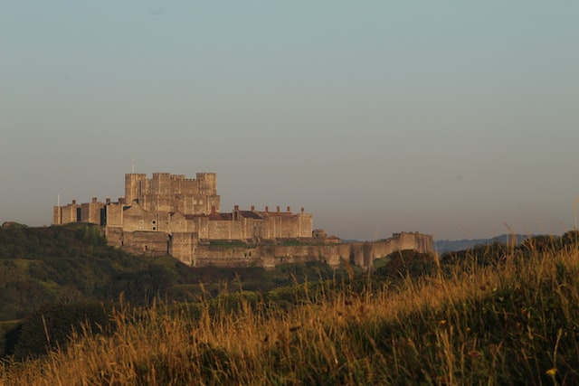
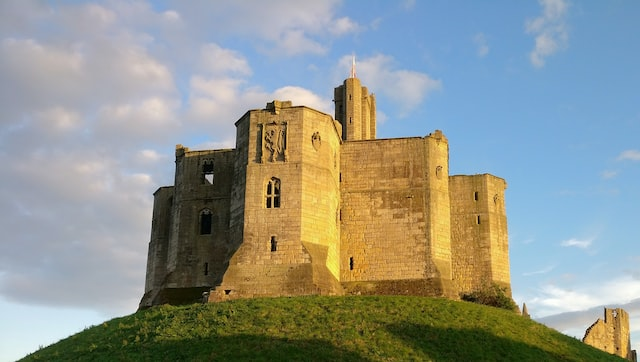

Castle Histories

Dover Castle is one of the most impressive and well-known castles in England. Its history spans from the time of the Roman Occupation to the Cold War. Read more here!

Warkworth Castle may be partially a ruin but it holds hundreds of years of memories of the Percy family. After hundreds of years it is still a breathtaking sight. Read more here!